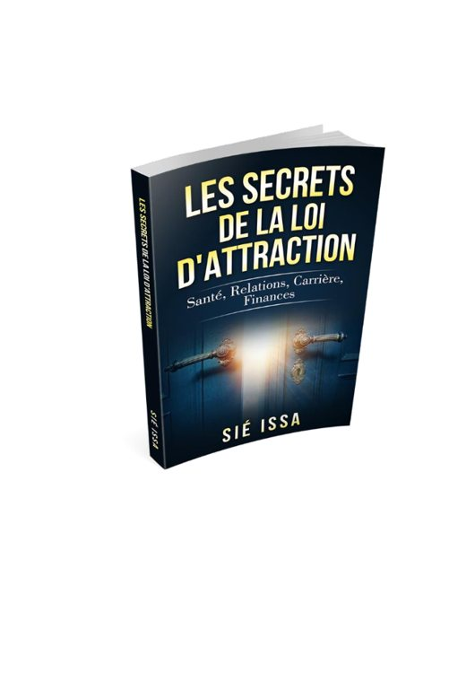

vie-et-societe
Les Secrets de la Loi d’Attraction

PDF non disponible en lecture publique.
Carte d’identité
- Auteur
- Sié Issa
- Genre
- vie-et-societe
- Pages PDF
- 58
Résumé du livre
Sié Issa présente la loi d’attraction comme une démarche où les pensées, les croyances et les attentes orienteraient les expériences vécues. Il commence par décrire trois étapes — demander, croire, recevoir — avant d’examiner les croyances limitantes et les habitudes mentales qui, selon lui, empêchent d’atteindre un objectif. Les exercices invitent à identifier ses convictions, à les reformuler, à pratiquer la gratitude et à agir dans différents domaines : travail, relations, santé et finances. Le texte relève du développement personnel : ses explications sur les « ondes » et le pouvoir causal des pensées sont des affirmations de l’auteur, non des mécanismes scientifiquement démontrés.
Sections du livre · 9 repères paginés
Repères fondés sur les titres et passages du PDF original. Ce sont des extraits de navigation, pas des résumés analytiques de chaque chapitre.
01IntroductionPDF p. 9
Repère tiré du texte : Les Secrets De La Loi De L’Attraction – Sié Issa 9 – Tous droits réservés – www.SieIssa.com Introduction « Demandez ce que vous voulez et soyez prêt à l'obtenir. » - Maya Angelou Imaginez avoir en votre possession un pouvoir total et absolu. Un pouvoir qui vous permet de maîtriser la chaleur du soleil, la pluie qui tombe, les vagues de la mer et la…
Lecture PDF indisponible02Qu’est-ce que la loi de l’Attraction ?PDF p. 12
Repère tiré du texte : Les Secrets De La Loi De L’Attraction – Sié Issa 12 – Tous droits réservés – www.SieIssa.com Qu’est-ce que la loi de l’Attraction ? « La loi de l’attraction attire tout ce dont vous avez besoin, comme un aimant, selon la nature de vos pensées. Votre environnement et votre condition financière sont par exemple le reflet exact de vos pensées quotidiennes ». -…
Lecture PDF indisponible03L’histoire de la loi de l’AttractionPDF p. 17
Repère tiré du texte : Les Secrets De La Loi De L’Attraction – Sié Issa 17 – Tous droits réservés – www.SieIssa.com L’histoire de la loi de l’Attraction « Que vous pensiez être capable ou ne pas être capable, dans les deux cas, vous avez raison. » - Henry Ford Avant d’entrer dans les détails de la loi de l’Attraction, vous devez comprendre qu’il ne s’agit pas d’absurdités ou…
Lecture PDF indisponible04Les croyances limitantesPDF p. 19
Repère tiré du texte : Les Secrets De La Loi De L’Attraction – Sié Issa 19 – Tous droits réservés – www.SieIssa.com Pourquoi la loi de l’attraction ne fonctionne pas chez la plupart des gens ? « Vous demandez, et vous ne recevez pas, parce que vous demandez mal… » - Jacques 4 : 3 Il y a quelques jours, j’ai lu sur Facebook une publication intéressante sur la loi de l’attraction.…
Lecture PDF indisponible05Développer des croyances positivesPDF p. 22
Repère tiré du texte : Les Secrets De La Loi De L’Attraction – Sié Issa 22 – Tous droits réservés – www.SieIssa.com Comment développer des croyances positives et inspirantes et activer votre pouvoir d'attraction ? « La réalité est une projection de vos pensées ou des choses auxquelles vous pensez habituellement. » - Stephen Richards J’aborde cette question dans le livre…
Lecture PDF indisponible06Les prémisses de la loi de l’AttractionPDF p. 29
Repère tiré du texte : Les Secrets De La Loi De L’Attraction – Sié Issa 29 – Tous droits réservés – www.SieIssa.com Les prémisses de la loi de l’Attraction : comment devenir Maître de l’Attraction ? « Quand une porte de bonheur se ferme, une autre s'ouvre; mais souvent nous regardons si longtemps la porte fermée que nous ne voyons pas celle qui nous a été ouverte. » - Helen…
Lecture PDF indisponible07Cinq étapes pour débloquer le pouvoirPDF p. 34
Repère tiré du texte : Les Secrets De La Loi De L’Attraction – Sié Issa 34 – Tous droits réservés – www.SieIssa.com 5 étapes pour débloquer le pouvoir de la loi de l’Attraction ? « Vous êtes le créateur de votre propre réalité. » - Anonyme A quoi bon connaître les principes de la loi de l’Attraction si vous ne pouvez pas les appliquer ? Une fois que vous aurez compris les…
Lecture PDF indisponible08Applications dans la vie quotidiennePDF p. 40
Repère tiré du texte : Les Secrets De La Loi De L’Attraction – Sié Issa 40 – Tous droits réservés – www.SieIssa.com Qu’est-ce que la loi de l’Attraction peut faire pour vous ? « Nous recevons exactement ce que nous espérons recevoir. » - John Holland La loi de l’Attraction peut changer le cours de votre vie, et les évènements qui s’y dérouleront. Voyons de plus près ce que la loi…
Lecture PDF indisponible09Cinq erreurs courantesPDF p. 52
Repère tiré du texte : Les Secrets De La Loi De L’Attraction – Sié Issa 52 – Tous droits réservés – www.SieIssa.com 5 erreurs courantes avec la loi de l’attraction. Comment les éviter et tirer profit de cette loi ? « Nourrissez de grandes pensées, car vous n'irez jamais plus haut que vos pensées. » - Benjamin Disraeli Beaucoup de gens connaissent la loi de l’attraction. Ils ont…
Lecture PDF indisponible